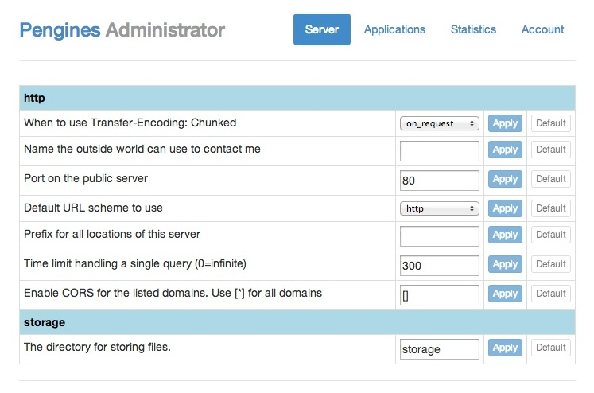
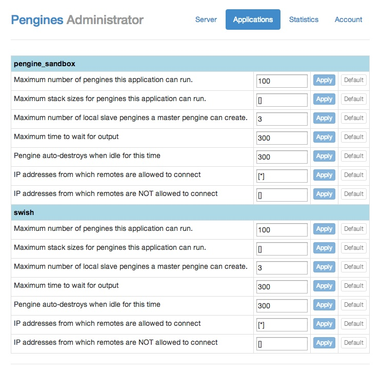
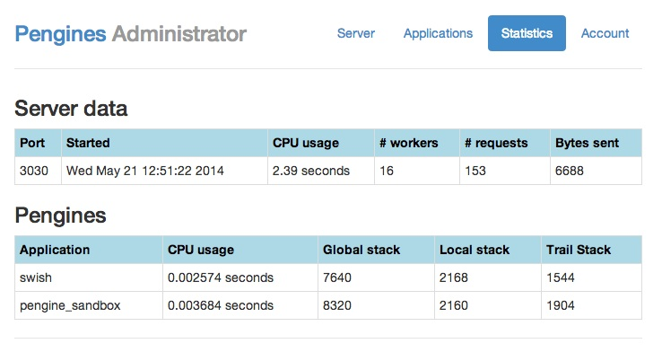
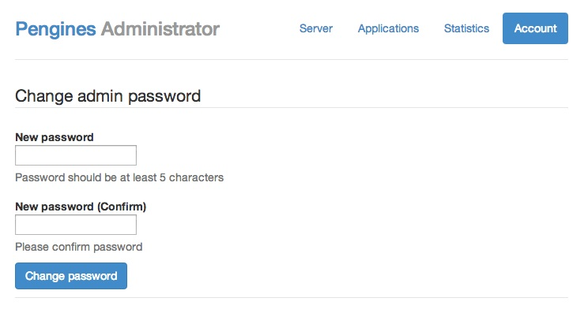

Getting started
An overview of Pengines, how to download, install and use.
An overview of Pengines, how to download, install and use.
First, ask yourself whether you really need to download and install the Pengines platform at this time. The platform is designed to allow online interaction with Prolog running in the cloud, and if you just want to check it out, you can probably do so without downloading and installing your own instance of the Pengines server. Indeed, you can skip this entire page and quickly move on to the fun parts, the Scratchpad and the SWISH applications. The only area that you will not have access to is the password protected Pengines Administrator.
If on the other hand you want to develop a serious application on top of the Pengines platform, you will need access to the apps directory and the Administrator pages, and thus need to download and install the whole distribution. Allowing access to the Pengines server from localhost only is of course safe, but if you are thinking about opening up to the rest of the world, please consider the following safety information:
We cannot at this time guarantee the safety of the Pengines platform. We think it is safe, but only if you know what you are doing. You run it at your own risk!
Download the latest full source code.
Basic installation merely requires installing a recent version (>= 7.1.5) of SWI-Prolog and unpacking the Pengines platform below.
Start run.pl as ./run.pl on Unix or double-click run.pl
on Windows and direct your browser to the indicated address (default
is http://localhost:3030/). You are now looking at the Pengines home page and should be able to use Scratchpad and SWISH and run all the examples. If you click Admin on the home page, you will be asked to enter a user name and a
password, and if this is the first time you use Pengines you should use "admin" for both. You will end up on the Server settings page.
You most likely want to change the admin password right away. Clicking the Account link will get you to a page that will allow you to do just that.
The Pengines Administrator is a password protected area that allows the owner of a Pengines server instance to change the settings of applications as well as of the server itself. It also features a statistics page where statistics of the workings of the systems is presented as well as an account page where the admin password can be changed.
The Pengines Administrator's server settings page gives an overview of various settings related to the operation of the server. This is where you set the various timeouts related to the system. It is also where you decide if your application should allow Cross-origin resource sharing (CORS). Here is a picture of the Server settings page:
The Pengines Administrator's application settings page is where the settings for pengines run by individual applications can be inspected and changed. Here is a screen dump depicting the application settings page:
The Pengines Administrator's statistics page gives an overview of various statistics related to the operation of the server. Here is a picture of the Statistics page:
Note that the Statistics page is available from the Pengines home page as well. If you prefer not to show it there you will need to comment out the relevant links in the files docs/index.html, docs/getting_started.html and docs/documentation.html.
The Pengines Administrator's account page allows you to change the admin password. Here is a picture of the Account page:
